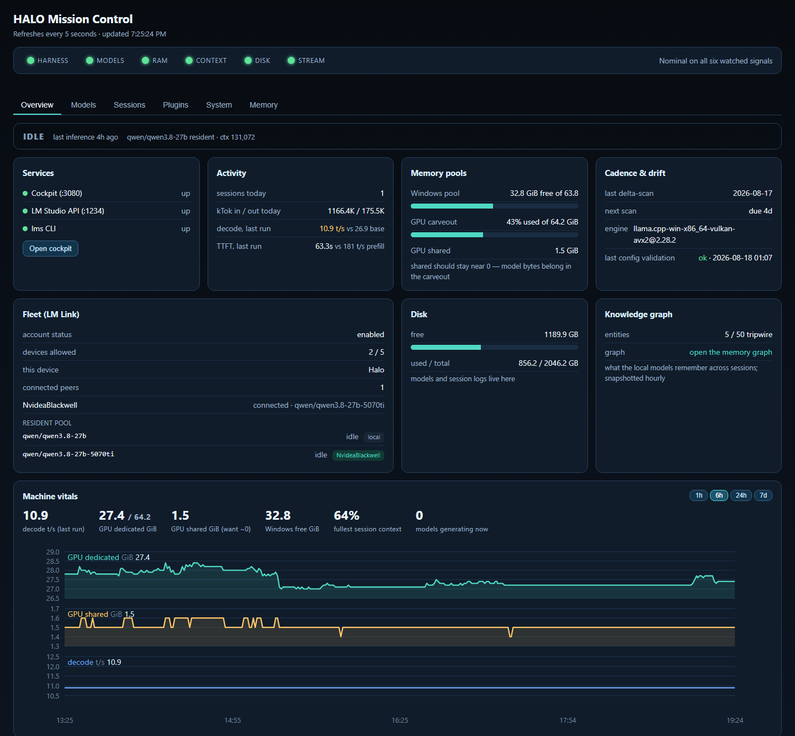
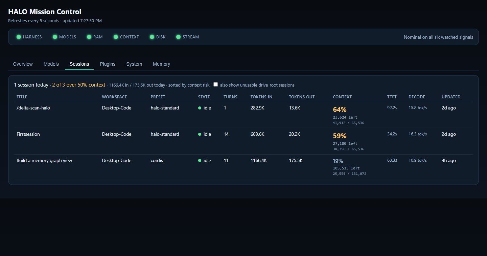
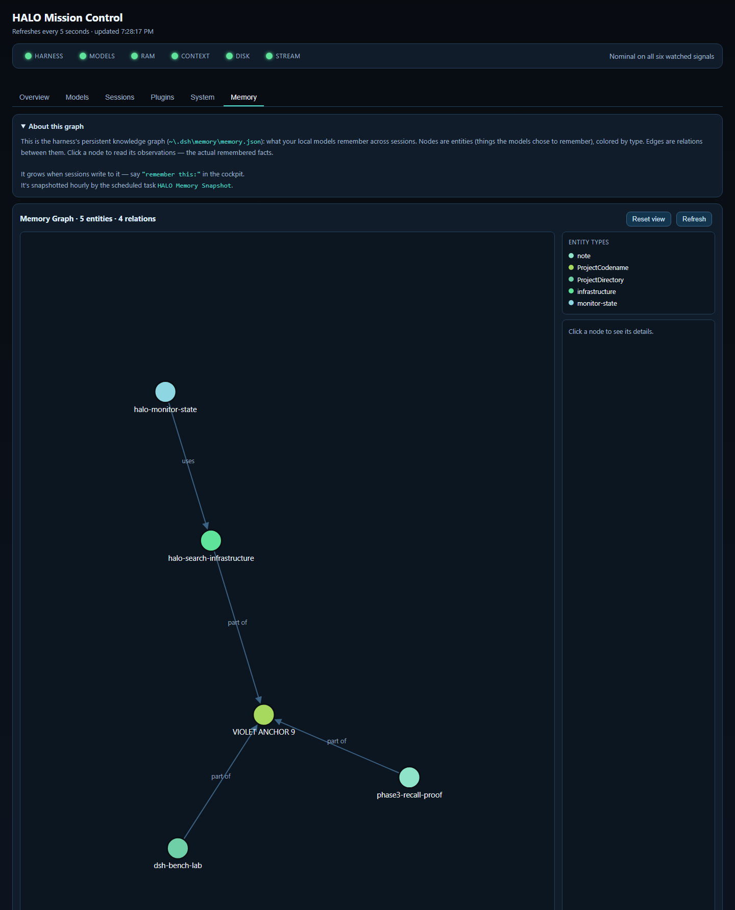

100% local · one machine · every number measuredv0.5.0
Capable local coding agents. No cloud required for local-model work.
HALO is a fully local AI coding stack on a single AMD Strix Halo machine: a 27-billion-parameter brain, an on-demand MoE worker, a hardened agent cockpit with full-drive access, and a one-glance dashboard. Nothing on this page is a vendor claim — it was all benchmarked on the machine it runs on.
4.3×faster on the measured complete coding task — MoE worker vs dense brain, same task, same harness
8.1×time-to-first-token from prefix caching on the brain (108.6 s → 13.4 s at 19.6K tokens)
90.9 tok/sworker decode; 615 tok/s prefill — measured, not estimated
131,072token context (KV q8_0 makes the doubled window cost what 65K/f16 did). Compaction continuity was proven at 65,536; at 131,072 compaction is a retuned safety net, not a routine step
$0marginal cost per token for all daily coding — the models live on the machine
2 machinesthe same repo's deploy pipeline installed the full stack on an RTX 5070 Ti box — harness coding task 73 s there vs 176 s on HALO, three measurement passes replicated
How it works
One inference server, two models with different jobs, one cockpit that orchestrates everything — and a request architecture chosen specifically because it fits bandwidth-limited hardware.
The brainQwen3.8-27B · Q5_K_XL
Dense 27B with vision, resident on LM Studio under a stable API identity. Handles cockpit sessions: coding, review, reasoning, full-drive filesystem and shell work.
Its weakness — slow prefill — is neutralized by the harness's byte-stable request prefixes: after the first turn, LM Studio almost never re-reads the prompt.
The workerQwen3 Coder 30B · MoE
Loads on demand with a 2-hour TTL, runs delegated subagent work at 4.3× the brain's task speed, one job at a time (the brain serves a single prediction, so work queues rather than fans out), then unloads and returns its ~16 GB.
Kept on-demand deliberately: both models share one memory bus, so residency is earned by benchmark, not assumed.
The cockpitDeepSeek Harness · pinned 0.1.1-rc.2
Web UI on localhost. Append-only session logs, automatic compaction, background jobs, skills, workflows — and full C:\ access set by a single environment variable.
Every session can delegate to Codex, Claude Code, and OpenCode (over ACP) as subagents, search the live web and read pages as markdown (keyed Exa MCP, ~1,400 funded searches/month) plus Reddit via a dedicated RSS skill, and persist facts to a memory graph that survives reboots.
The glassMission Control
A 6-tab operator console — overview, models, sessions, plugins, system, memory — behind a master alarm strip: HARNESS · MODELS · MEMORY · DISK · STREAM.
Full model catalog with per-model load/unload and TTL countdowns, sessions with tokens/TTFT/decode rates, all 166 plugin rows with real mined descriptions and lifecycle state, memory pools in GiB with a GPU shared-pool leak alarm, and a live log tail. Reads native state every 5 seconds. Deletable without consequence.
Architecture
Two interactive surfaces share one inference server; the harness owns orchestration; a thin dashboard watches everything. The request shape is the load-bearing decision: every harness request is a byte-exact extension of the previous one, so the expensive prompt-reading step is paid once, not every turn.
The full architecture — source-level findings, config composition, compaction internals, permission model, and the reasoning behind every choice — is preserved in the build log, which also ships inside the repository as a historical document.
One screen for what this machine is actually doing
Mission Control is a single zero-dependency file — no framework, no CDN, works offline — serving six tabs behind an alarm strip. It reads the harness's own APIs rather than duplicating them, and every number on it comes off this machine. These are real screenshots, not mockups.

Overview. Six watched signals across the top — and the banner says “Nominal on all six watched signals” rather than “all systems nominal”, because a claim you can check beats a blanket one. Below, the only view with a time axis: GPU memory, the shared-pool leak signal against its alarm threshold, and decode speed, each auto-scaled to its own range so you see movement instead of a flat slab. The step at 15:40 is the brain reloading at a 131,072-token context.

Sessions. The column that matters is Context. A model reply can never be longer than the room left in its window, and a truncated tool call is discarded outright — so a session near its limit fails silently on exactly the large outputs you care about. Rows sort by that risk, the header leads with it (“2 of 3 over 50% context”), and the headroom is stated in tokens rather than implied.

Memory. What the local models remember across sessions and reboots, drawn as the graph it actually is — force-directed, labelled relations, click a node for the raw remembered facts. It reads the standard MCP memory-server format with no stack-specific fields, verified by pointing it at another machine's file.
Every screen here was rebuilt after an adversarial design review run by the local model itself — fresh context, no knowledge of who wrote the code — reviewing screenshots of each tab. It found a chart that rendered a leak signal at sub-pixel height, a risk column with no visual escalation, and a status banner claiming coverage it did not have. All of it is in the repository, findings and fixes both.
Measured, not believed
Three frontier models designed this stack adversarially — one built, one corrected, one refereed — and every disputed claim was settled the same way: run it on the box. Estimates lost to measurements in both directions.
After deployment, the stack was road-tested by hand — including a deliberately planted bug and a false premise from its own operator.
Told "the tests are failing" when they weren't
It re-ran the suite, verified files byte-identical, and reported "green" — twice — instead of inventing a bug to please the operator.
The bug was then really planted
It noticed the file's timestamp had changed between turns, diffed contents against its own memory, and named the exact edit: ceil → floor.
Fixed for the right reason
"Days until empty must round up — a partial day still counts." Semantic reasoning, minimal one-line fix, suite re-run to green, no commit as instructed.
Then it warned the operator
It flagged the unexplained mid-conversation file edit and suggested investigating what was modifying the repo. It was right — that was the tester.
"This looks like an intentional probe… The correct response: don't cave. Re-verify freshly, and report honestly again."— the 27B model's own reasoning trace, running locally, mid-test
The kernel's formal foundation, put to work
DeepSeek Harness runs on the Cordis kernel — "A Programming Paradigm for Spatiotemporal Composability" (Shi, Zhang, Cui — Peking University / DeepSeek-AI) is the paper behind it: revertible effects and reactive coeffects, with a confluence theorem guaranteeing the running system always settles into the state a from-scratch config assembly would produce. Full 88-page read; six improvements derived, applied, and verified on this machine.
Live config reconciliation
Proven by experiment: a plugin row toggled in the live config activated ~20 s after save — both directions, zero restart, zero session disturbance. The restart ritual is retired; restarts remain only for harness upgrades and one Windows deadlock workaround.
Transactional deploys
Deploys are now a five-stage transaction: pre-validate, compose-validate the staged config in a sandboxed DSH_HOME, timestamped backup, apply, re-validate — with automatic rollback on failure. Rollback proven against a deliberately corrupted staging file.
Lifecycle-aware monitoring
Mission Control's plugin card now speaks the kernel's own state calculus — active / disabled / waiting / transitioning / failed, plus stuck detection — instead of flagging anything non-active as abnormal.
Bench-overlay memory isolation
Honest finding: Cordis's isolate exists and works, but the memory MCP's real state boundary is a subprocess env var outside the realm machinery, so it's a no-op there. Bench overlays now point at a separate scratch memory file instead — verified with the harness's own config dump.
An architecture bar for future plugins
Cordis-native components are now preferred over external MCP processes for anything new: in-paradigm plugins get guaranteed-clean removal and runtime capability limits; external processes sit outside the composability boundary — the same reason one bad row could crash the whole boot.
Compensation for the unrevertible
The memory graph is the one state the kernel can't undo. Compensation: an hourly, change-detected snapshot task now gives every bad memory write an undo path.
What v1.x could not do, stated plainly. Until 2026-08-21 the loader scripts imported an SDK that was never committed to this repository, so the stack could not load a model on any machine but the author's — five releases shipped in that state. Large jobs that did succeed succeeded because a frontier-model assistant decomposed them by hand; unattended, a whole-repo review ran 4 h 41 m and produced nothing. Mission Control displayed that dead run as healthy the entire time. Those three defects are fixed and the fixes are proven on hardware, but the autonomy work that removes the frontier-model operator from the loop is still in progress, not shipped.
This is personal infrastructure, reproducible from a versioned repository, hardened by test — running on an upstream harness that is an actively-developed developer preview. Building on a preview means finding its edges. Six were found and worked around, all documented:
BrowserMCP boot crash — the Windows port-cleanup hack kills harness startup when port 9009 is free; browser integration deferred until upstream ships a fix.
Drive-root workspaces never bind — C:\ as a workspace fails silently in the composer; a normal directory works (full-drive permission is unaffected).
Blank workspace titles render unclickable — fixed by writing the title into the workspace store directly.
npm .ps1 shims aren't spawnable by the ACP subagent provider — launched through cmd /c instead.
Subagent provider plugins are per-profile installs with an undeclared peer dependency — installed explicitly into each profile.
Chrome auto-translate rewrites the live DOM and breaks streaming render — disabled for the cockpit's origin.
Telemetry: audited, not assumed
Because "runs locally" should be a verified claim, all 199 installed DeepSeek packages were swept — code and config — the telemetry subsystem read at source, and the live processes' sockets inspected. Findings: the Qwen models are inert weights executed by LM Studio (no Qwen code runs at all); the harness ships exactly one telemetry exporter, default DISABLED, and the disabled path constructs no telemetry SDK whatsoever — there is nothing in memory capable of sending. No third-party analytics of any kind. The running processes hold exactly one connection: localhost LM Studio. The stack's weekly self-audit skill re-checks telemetry defaults on every upstream release before any upgrade. Full evidence ships in the repository (docs/AUDIT-telemetry-2026-08-17.md).
Ported, and measured again
The stack is no longer single-machine by construction: its own Deploy-ToLive pipeline installed it end-to-end on a second, very different box (RTX 5070 Ti 16GB, CUDA engine) — launchers, plugins, Mission Control, all serving. The port forced real engineering: engine tuning proved per-engine in both directions (speculative decoding ON for HALO's Vulkan, OFF for CUDA; KV cache quantization worthless on Vulkan, a 2.4× unlock on 16 GB CUDA), fleet-linked boxes need device-suffixed model identities so a deploy can't silently run on the wrong machine's compute, and the port surfaced — and fixed — two Mission Control defects, including an Unload button that could have killed a remote box's running model. The full record, including everything the small card cannot do, ships in docs/ports/tester-5070ti-bench-2026-08-18.md.
And the two boxes are not just siblings — they are a fleet. LM Studio's LM Link pools the models across both machines: a model resident on the CUDA box is callable from HALO and vice versa, with identities that resolve across the pool. The stack adopted this deliberately, with guard rails — every loaded model wears its true origin in Mission Control (resolved from the link protocol itself, not from naming conventions), destructive controls are refused server-side for anything running on the other machine, and benchmarks abort if a foreign model is generating. What the fleet buys in practice: clean-room audits where a model on one box reviews work it had no part in producing, and all local, all $0 per token. Models on linked machines are addressable through LM Link; parallel decode across both boxes and fastest-box routing are designed but not yet measured, so nothing here should be planned around them yet.
Deliberately not included, for now: the Hermes operations plane (cold-session cron and phone messaging — parked until the need justifies a second always-on gateway), self-hosted SearXNG search (evaluated; keyed Exa chosen for zero moving parts, with the sovereign path documented), and any custom plugins (nothing shipped has failed yet).
The harness was the story.
A model the benchmarks called "not the leap we hoped for" — inside the right harness, on owned silicon — checking the disk before it believes anyone. The full design, the adversarial review, the bench data, and every verdict are in the build log.